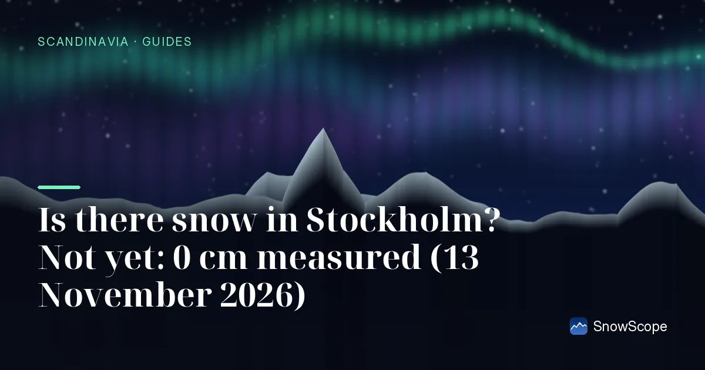

Is there snow in Stockholm? Not yet: 0 cm measured (13 November 2026)
Stockholm is still without snow on this mid-November Friday. All five weather stations in and near the city recorded bare ground, from the city centre to the outer districts. Meanwhile, stations north of Gävle tell a different story: more than half now have snow on the ground, with Sälen holding 45 cm and Östra Falmark 40 cm.
See the live snow forecast for Stockholm in the SnowScope appSnow depth, powder alerts and the 3D map, free.
Where does the snow start?
If you stand in Stockholm and look for white ground, you must travel 75 km north to Norrveda before you find any: just 2 cm there. The divide is sharp. Around the 60th parallel—roughly the latitude of Gävle—the landscape changes from green to patchy white. North of there, 21 of 37 stations hold snow.
The snow gets deeper as you go further north and inland. The band between 62 and 64 degrees north is now almost entirely white: 43 of 45 stations measured snow. Sälen, in Dalarna at 364 m elevation, has the deepest cover in the region at 45 cm. Almdalen, inland from the coast at 615 m, holds 38 cm. These places are not far from Stockholm in straight-line distance—perhaps 300 to 400 km—but they sit at higher elevation and catch colder air masses that have not yet reached the capital.

Why is Stockholm still bare?
This is normal for mid-November. SnowScope's records from 46 past winters show that on this date, only 11 winters had snow cover over Stockholm. The ground was bare on 13 November in each of the last five winters, just as today. The typical first snow date for the city is around 30 November.
The pattern reflects a weather divide that moves north and south through autumn. Cold Arctic air masses sink down over central and northern Sweden, bringing snow there first. Warmer Atlantic weather still dominates the south, keeping Stockholm mild and wet rather than frozen and white. By late November, the cold usually pushes further south and wins the battle.
What comes next?
The next few days bring no change. Saturday and Sunday stay dry to mostly dry, with temperatures near 0 °C at night and climbing to around 7 °C on Sunday afternoon. Rain arrives on Monday with about 6 mm of precipitation, but it stays too mild for snow. The city's forecast shows no white ground in the visible window.
When snow does arrive in Stockholm, it arrives thin. Looking at past Novembers and Decembers, the typical depth is about 1 cm on 1 December, 2 cm by mid-December, and 5 cm by mid-January. Early snow is fragile and melts quickly. Real accumulation takes weeks of cold weather.
The geography of early snow
Sweden's latitude matters, but so does elevation. Stations on islands and low ground near Stockholm all measured 0 cm: Sandhamn on the archipelago, Dalarö on the coast, and Norsborg in the lowlands. But move inland and climb a little, and the story changes. The Dalarna uplands, the inland plateaus of Värmland and Gävleborg, and the high ground of central Sweden are where November snow first settles and stays.
This is why skiers heading north from Stockholm this weekend do not search the flat coast or nearby lowlands. They aim for the forest and hills north of Gävle, or for Dalarna proper, where reliable early-season cover begins around 300 to 400 m elevation.
Real hazards this weekend
Although snow is absent, Stockholm is not hazard-free. Frosty nights and wet days create perfect conditions for slippery leaf litter on forest paths and park trails. Bridge surfaces and wooden piers freeze before open ground does, making them treacherous at dawn and dusk. Wear grip-soled shoes if you plan to walk near water or through wooded areas.
The city's ski tracks and sledding hills are waiting for snow. For now, they offer bark mulch and dirt rather than gliding surfaces. Plan forest walks and cycling instead, or aim your skis at the northern hills where snow already lies.
Tips for skiers
- If you must find snow this weekend from Stockholm, travel at least 75 km north or head inland to higher ground. Sälen in Dalarna and stations around Östersund are already white.
- For weekend walks in the city, wear shoes with good grip. Early morning and evening are the most slippery times.
- Check local ski-track websites before heading out: none of Stockholm's groomed trails will have snow cover yet.
- Bare asphalt and wet leaves, not ice or snow, are the slip risks in the capital right now.
- The usual arrival window for lasting snow in Stockholm is late November. Watch the forecast again in a week.
About these numbers
Resort snow depths are the deepest snow on the resort's upper slopes on the date shown; they are estimates for an area, not a measurement at one point. Forecasts can change. Always read the official avalanche bulletin before going off-piste.
Cite this report
For research, teaching or the press: the numbers and charts are free to reuse under CC BY 4.0 with this citation.
SnowScope (2026), Is there snow in Stockholm? Not yet: 0 cm measured (13 November 2026), https://snowscope.app/blog/en/2026/11/stockholm-snow-today-13-november-2026.html, accessed 2026-11-13
SnowScope (Atlas Labs). (2026, November 13). Is there snow in Stockholm? Not yet: 0 cm measured (13 November 2026). SnowScope snow reports. https://snowscope.app/blog/en/2026/11/stockholm-snow-today-13-november-2026.html
BibTeX
@misc{snowscope2026stockholmsnowtoday13nove,
author = {{SnowScope (Atlas Labs)}},
title = {Is there snow in Stockholm? Not yet: 0 cm measured (13 November 2026)},
year = {2026},
month = nov,
howpublished = {\url{https://snowscope.app/blog/en/2026/11/stockholm-snow-today-13-november-2026.html}},
note = {Published 2026-11-13 18:49 UTC; accessed 2026-11-13}
}· CC BY 4.0 · Methods, data and tools →
Follow Stockholm
Free: a message when fresh snow is coming, and the forecast every morning.
More snow reports

Tänndalen has 7 cm at its base station on 13 November, with 8 cm forecast in the next week. Ramundberget opens 19 December.

On 13 November, Kindsjön station at 425 m near Branäs measured 27 cm of snow while the valley floor stayed bare. Height is everything this week in Värmland.

Beitostølen has 12 cm measured at the weather station on 13 November. The whole ski area sits at the same altitude band, so snow depth barely changes from base to summit.